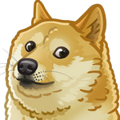

Vix!
Chatroom
Home
Upload
My Account
EULA
New Livestream
Stream name:
Stream description:
Start Stream
Stop Stream
Type:
Camera Stream
Screen Share
Preview:
Active Viewers:
Chat Room
Send
Watch a Livestream
Available Streams (UUIDs):
No streams available.
Refresh Streams
Your Chat Nickname:
Set Nickname
Stream ID to Join:
Join Stream
Chat Room (
Not Joined
)
Send
No warnings yet.
Connecting...